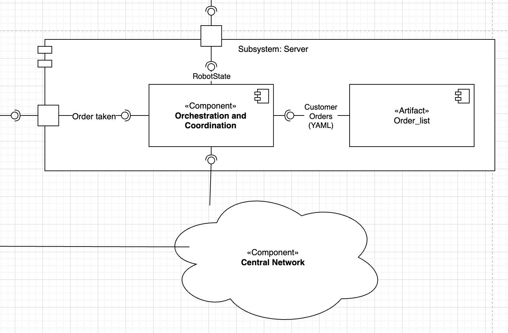

Subsystem Server
Role in the architecture
While each TIAGo executes its own navigation and manipulation stack, one central server coordinates the workflow:
stores every verified customer order in a persistent FIFO queue,
assigns the next order to whichever robot reports the state Free or Wait,
returns a “Busy → order list” transition so the robot can start execution.
The logic lives in a single script, :pyfile:`orchestration_and_coordination.py`.
{kind=link}
ROS interfaces & KPIs
Service / Topic |
Type |
KPI / Note |
|---|---|---|
|
|
99.9 % success, response < 100 ms, Busy → order size ≥ 1 |
|
|
Writes to YAML within 50 ms, handles 20 requests / s |
|
YAML |
Survives restart, corrupt file recovery < 1 s |
Data life-cycle
Order added – verification node calls
/robot_state_decision_add.Server saves the new entry to tiago_data.yaml and logs “order added”.
A robot reports Free ➜ server pops the queue and returns the task with state Busy.
When all robots report Busy and the queue empties, new robots receive the response Wait until a fresh order arrives.
Implementation module
Full API documentation:
Server Component